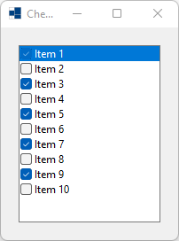
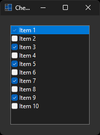
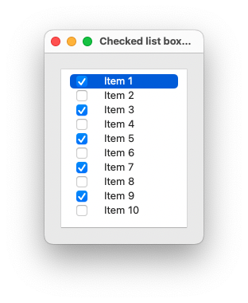
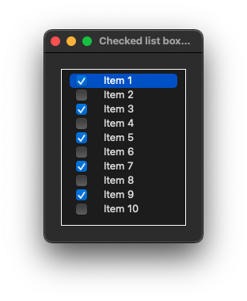
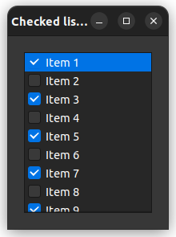

|
xtd
0.2.0
|
Loading...
Searching...
No Matches
checked_list_box.cpp
demonstrates the use of xtd::forms::checked_list_box control.
- Windows
- 

- macOS
- 

- Gnome


#include <xtd/forms/Application>
#include <xtd/forms/checked_list_box>
#include <xtd/forms/form>
#include <xtd/cdebug>
using namespace std;
using namespace xtd;
using namespace xtd::forms;
namespace checked_list_box_example {
public:
form1() {
text("Checked list box example");
client_size({200, 240});
checked_list_box1.parent(*this);
checked_list_box1.location({20, 20});
checked_list_box1.size({160, 200});
checked_list_box1.anchor(anchor_styles::top | anchor_styles::left | anchor_styles::bottom | anchor_styles::right);
for (auto index = 1; index <= 10; ++index)
checked_list_box1.items().push_back({ustring::format("Item {}", index), index % 2 != 0});
checked_list_box1.selected_index(0);
cdebug << ustring::format("item_check, index={}, new_value={}, current_value={}", e.index(), e.new_value(), e.current_value()) << endl;
};
}
private:
checked_list_box checked_list_box1;
};
}
auto main()->int {
application::run(checked_list_box_example::form1 {});
}
Displays a xtd::forms::list_box in which a check box is displayed to the left of each item.
Definition checked_list_box.h:34
Represents a window or dialog box that makes up an application's user interface.
Definition form.h:52
Provides data for the item_check event of the checked_list_box and list_view controls.
Definition item_check_event_args.h:27
The xtd::forms namespace contains classes for creating Windows-based applications that take full adva...
Definition about_box.h:13
The xtd namespace contains all fundamental classes to access Hardware, Os, System,...
Definition system_report.h:17
Generated on Tue Sep 12 2023 23:07:47 for xtd by Gammasoft. All rights reserved.